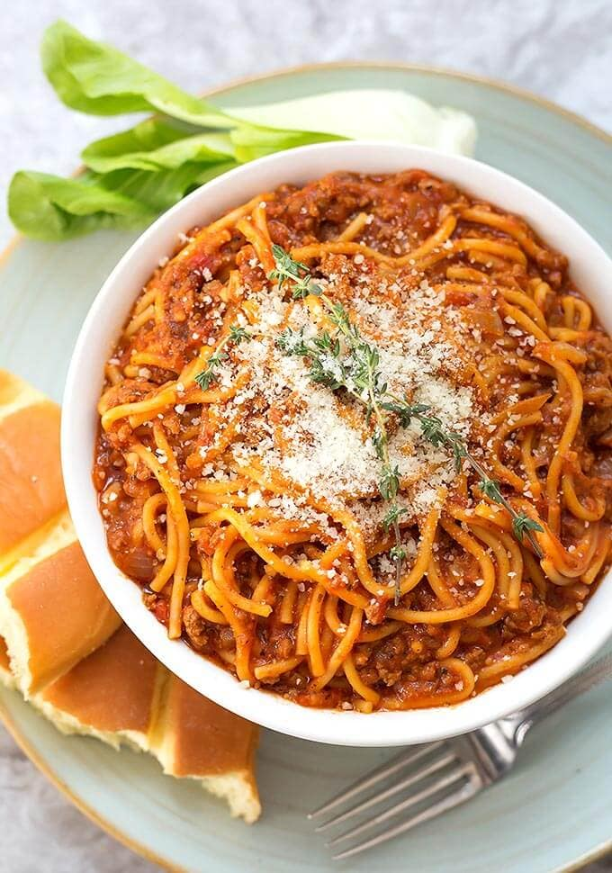

Spaghetti
Go back

Spaghetti Aglio e Olio
Ingredients:
- 200g spaghetti
- 4 garlic cloves, thinly sliced
- 1/2 teaspoon red pepper flakes
- 1/4 cup extra-virgin olive oil
- Salt, to taste
- Fresh parsley, chopped (for garnish)
- Grated Parmesan cheese (optional)
Steps:
- Cook spaghetti in salted boiling water until al dente.
- In a pan, heat olive oil over medium heat. Add garlic and red pepper flakes.
- Once garlic turns golden, add the drained spaghetti to the pan.
- Toss until spaghetti is well coated in the garlic oil.
- Season with salt, garnish with parsley, and serve with Parmesan if desired.